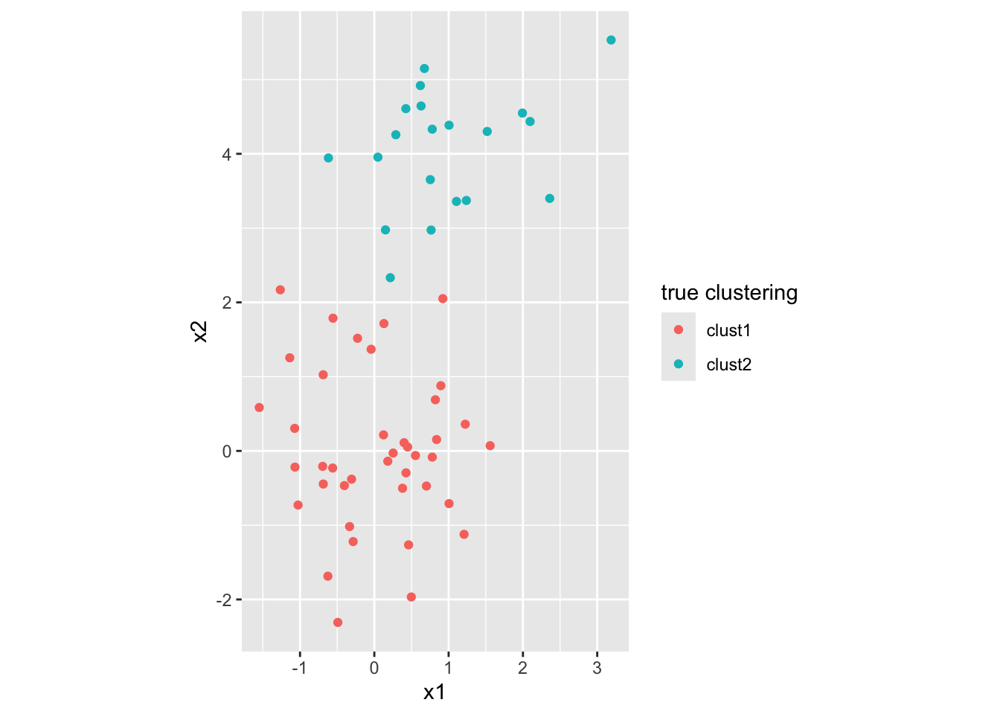
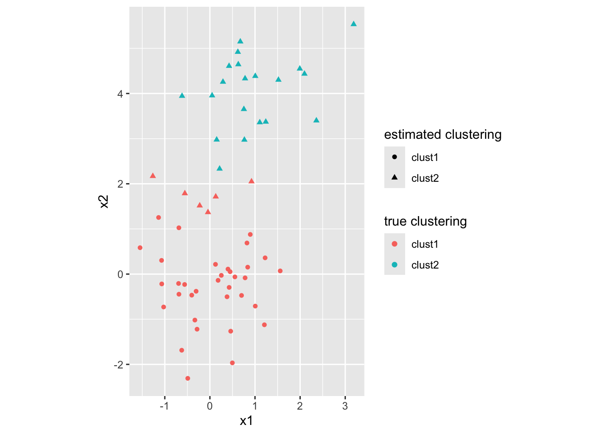

3 Preliminaries
Before getting to the main methodology, let’s define some functions for generating example data and making plots.
3.1 Generating data
For \(\ell=1,\ldots, k\) and each \(i\in C_\ell\), we generate
\[ X_i|Y_i=\ell \sim N_p(\mu_\ell, \sigma^2 I_p). \]
#' Generate samples from a clustering model
#'
#' Samples X|Y=l ~ N_p(mu_l, sigma^2 * I_p)
#'
#' @param nums k-vector giving the number of points in each cluster
#' @param mu k-by-p matrix giving the k cluster centers
#' @param sigma within cluster sd
generate_data <- function(nums, mu, sigma = 1) {
k <- nrow(mu)
p <- ncol(mu)
stopifnot(length(nums) == k, nums > 0, sigma > 0)
x <- matrix(nrow = 0, ncol = p)
for (l in seq(k)) {
xl <- matrix(mu[l, ] + sigma * stats::rnorm(nums[l] * p), ncol = p, byrow = TRUE)
x <- rbind(x, xl)
}
list(x = x, clust = rep(1:k, times = nums))
}## ✔ Adding stats to 'Imports' field in DESCRIPTION.## ☐ Refer to functions with `stats::fun()`.Let’s generate a simple two-cluster, two-dimensional example, which we’ll use throughout.
set.seed(123)
ex1 <- generate_data(
nums = c(40, 20),
mu = matrix(c(0, 0,
1, 4), byrow = TRUE, nrow = 2)
)3.2 Plotting data
#' Plot two-dimensional data while showing up to two clusterings
#'
#' For example, can be used to plot both the true and estimated clusterings.
#'
#' @param x n-by-2 data matrix
#' @param clust1 n-vector of cluster indices
#' @param clust1_label name of clustering 1 (e.g. "true clustering")
#' @param clust2 n-vector of cluster indices (optional)
#' @param clust2_label name of clustering 2 (e.g. "estimated clustering"); optional
plot_clustered_data <- function(x, clust1, clust1_label = "clust1", clust2 = NULL, clust2_label = "clust2") {
no_legend <- is.null(clust1_label)
if (no_legend) clust1_label <- "clust1"
dat <- tibble::tibble(x1 = x[, 1], x2 = x[, 2], clust1 = clust1)
dat <- dat %>%
dplyr::mutate(!!clust1_label := paste0("clust", clust1))
if (is.null(clust2)) {
# show only one clustering
p <- dat %>%
ggplot2::ggplot(ggplot2::aes(x = .data$x1,
y = .data$x2,
color = .data[[clust1_label]])) +
ggplot2::geom_point() +
ggplot2::coord_equal()
}
else {
# show two clusterings
dat <- dat %>%
dplyr::mutate(!!clust2_label := paste0("clust", clust2))
p <- dat %>%
ggplot2::ggplot(ggplot2::aes(x = .data$x1, y = .data$x2,
color = .data[[clust1_label]],
shape = .data[[clust2_label]])) +
ggplot2::geom_point() +
ggplot2::coord_equal()
}
if (no_legend) p <- p + ggplot2::theme(legend.position = "none")
return(p)
}usethis::use_pipe()
usethis::use_import_from("rlang", ".data")
usethis::use_package("tibble")
usethis::use_package("dplyr")
usethis::use_package("ggplot2")## ✔ Adding magrittr to 'Imports' field in DESCRIPTION.## ✔ Writing 'R/utils-pipe.R'.## ☐ Run `devtools::document()` to update 'NAMESPACE'.## ✔ Adding rlang to 'Imports' field in DESCRIPTION.## ✔ Adding "@importFrom rlang .data" to 'R/randhclust-package.R'.## ✔ Writing 'NAMESPACE'.## ✔ Adding tibble to 'Imports' field in DESCRIPTION.## ☐ Refer to functions with `tibble::fun()`.## ✔ Adding dplyr to 'Imports' field in DESCRIPTION.## ☐ Refer to functions with `dplyr::fun()`.## ✔ Adding ggplot2 to 'Imports' field in DESCRIPTION.## ☐ Refer to functions with `ggplot2::fun()`.Let’s try this when we give it only the true clustering:
plot_clustered_data(ex1$x, ex1$clust, clust1_label = "true clustering")
Now let’s perform hierarchical clustering and compare the true to estimated:ex1$d <- dist(ex1$x)
ex1$hc_complete$hc = hclust(ex1$d, method = "complete")
plot_clustered_data(
ex1$x,
clust1 = ex1$clust,
clust1_label = "true clustering",
clust2 = cutree(ex1$hc_complete$hc, k = 2),
clust2_label = "estimated clustering")